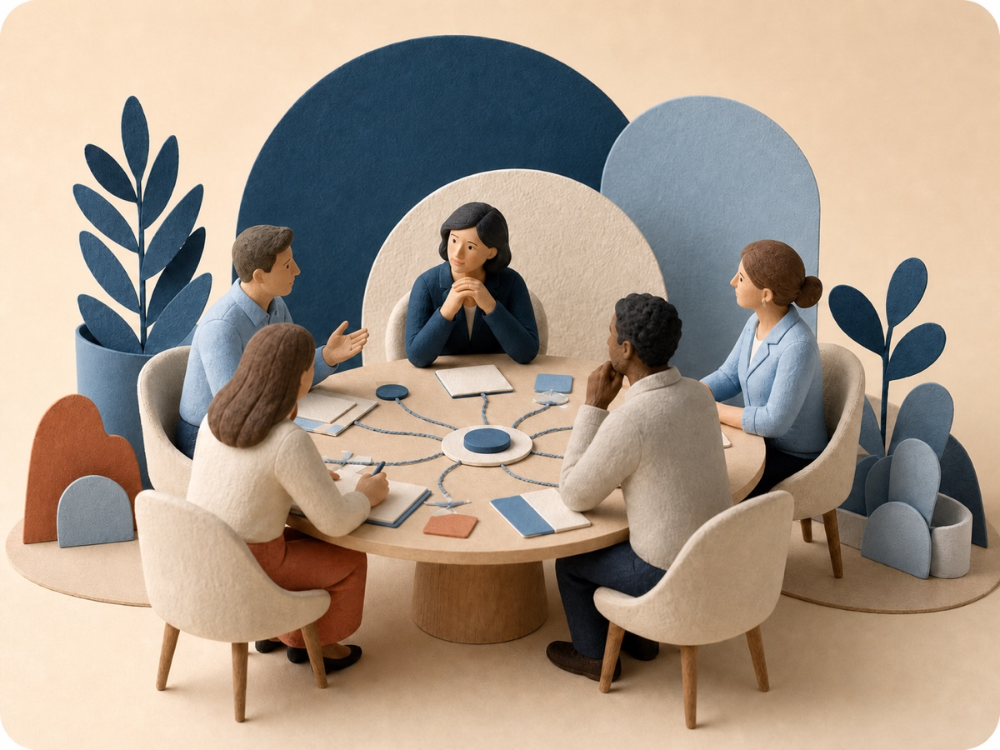

01
A team meets
An investment team is discussing a student housing opportunity. The conversation includes data, assumptions, disagreement, and judgment.
A working idea for Harrison Street
A concept created for the Content Specialist role at
Harrison Street already has the knowledge. The opportunity is to make more of it easier to find and reuse without losing the reasoning behind it.
See how it could workA note from Zack:I made this to show how I would begin thinking about the role—and how seriously I would take the work of turning what people know into something the team can actually use.
01 / The opportunity
As the firm grows, knowledge and judgment are being created across more teams and more places. That makes them harder to carry through conversations, relationships, and documents alone.
How could Harrison Street make that knowledge easier to access when someone needs to understand a past decision or make a new one?
Harrison Street website data as of March 31, 2026.
02 / One possible approach
The HSAM Wiki is a simple way to demonstrate the idea: approved knowledge in one place, with the source always easy to check.
Browse knowledge
Recently reviewed
Fictional examples03 / How I would help build it
A practical flow for turning expertise into knowledge people can trust and reuse.

01 / 06 Illustrative process
04 / One example
An investment team is discussing a student housing opportunity. The conversation includes data, assumptions, disagreement, and judgment.
The transcript is only the starting point. The useful part is identifying what mattered: the evidence, assumptions, tradeoffs, and decision logic behind the discussion.
That context is turned into an approved knowledge record. Instead of saving every sentence, the system preserves the decision, the reasoning behind it, and what could change later.
Later, someone asks a related question. The system returns a concise answer linked to the approved records behind it, so the user can see both the takeaway and the source.
05 / Where I would begin
I would begin by understanding the decisions, people, and knowledge flows. The answers would shape what gets built first.
This role interests me because it brings together the work I enjoy most: listening closely, making sense of complicated information, and turning what people know into something the rest of the organization can actually use. I would be excited to help Harrison Street preserve that knowledge and make it more useful as the firm continues to build its AI capabilities.
More of Zack Olguin